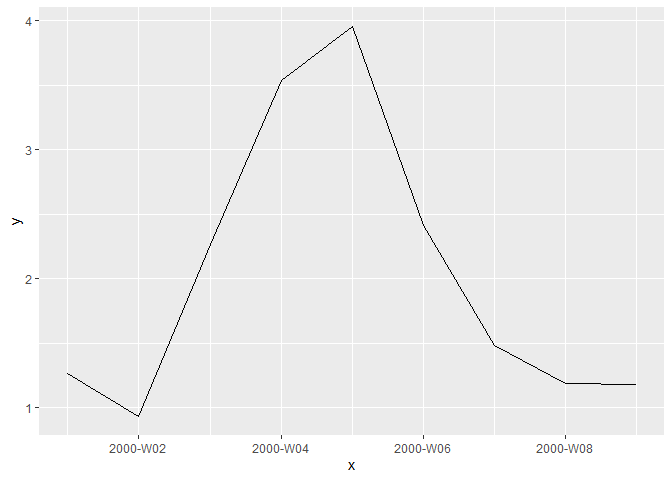

A class for week numbers, according to ISO 8601.
Examples
Coercion to the week number class:
library(weeknumber) as_weeknumber(c(-1:1, 51:52, NA)) #> <weeknumber[6]> #> [1] 1999-W52 2000-W01 2000-W02 2000-W52 2001-W01 <NA> as_weeknumber("2000-W01") #> <weeknumber[1]> #> [1] 2000-W01 as_weeknumber(as.Date("2000-12-28")) #> <weeknumber[1]> #> [1] 2000-W52
Make week number object from year and week:
make_weeknumber(2000:2001, 4:5) #> <weeknumber[2]> #> [1] 2000-W04 2001-W05 make_weeknumber(2019:2020, 53) #> <weeknumber[2]> #> [1] <NA> 2020-W53
Get year and week number from an object:
x <- as_weeknumber(c(-1:1, 51:52, NA)) year_week(x) #> $year #> [1] 1999 2000 2000 2000 2001 NA #> #> $week #> [1] 52 1 2 52 1 NA
Print a tibble:
set.seed(0) library(tibble) d <- tibble( x = seq(as_weeknumber("2000-W01"), as_weeknumber("2000-W09")), y = cumsum(rnorm(length(x))) ) print(d) #> # A tibble: 9 x 2 #> x y #> <week> <dbl> #> 1 2000-W01 1.26 #> 2 2000-W02 0.937 #> 3 2000-W03 2.27 #> 4 2000-W04 3.54 #> 5 2000-W05 3.95 #> 6 2000-W06 2.41 #> 7 2000-W07 1.49 #> 8 2000-W08 1.19 #> 9 2000-W09 1.18
Plot with week number scale:
